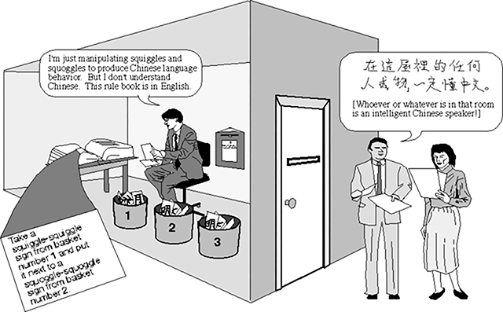

The Chinese Room Experiment by John Searle
& Jean Bauldrillard, Jessica Riskin, and the "Extended Mind" Hypothesis

The Chinese Room experiment, proposed by philosopher John Searle in 1980, raises fundamental questions about the nature of artificial intelligence (AI) and its ability to truly understand language. In the experiment, Searle asks us to imagine a person sitting in a room, who is given a set of rules in English and a large set of Chinese symbols. The person does not understand Chinese but uses the rules to manipulate the symbols and produce output that appears to be Chinese language responses to questions. Searle argues that even though the person is able to produce the right responses, they do not understand the language, just as a computer program following rules does not truly understand the language it processes. In recent years, new advancements in AI have reignited the debate surrounding the Chinese Room experiment. One of the most significant developments is the emergence of machine learning algorithms, which can "learn" from large datasets and improve their performance over time. However, there is still a fundamental difference between a computer program following a set of rules and a human brain that can truly understand language.
French philosopher Jean Baudrillard's concept of simulacra can shed light on this distinction between simulation and actual learning. In his work, Baudrillard argues that our contemporary society is inundated with simulations, copies that have no original referent or source. The Chinese Room experiment can be seen as an example of a simulation of language understanding. The computer program appears to understand language, but it is only simulating this understanding based on a set of rules.
Furthermore, philosopher Jessica Riskin's "Defecating Duck" simulation highlights the limitations of simulating intelligence. In her thought experiment, Riskin asks us to imagine a machine that simulates the behavior of a duck defecating, complete with sound effects and mechanical movements. While the simulation may appear convincing, it does not truly capture the complexity of the biological processes involved in the act of defecation.
The "Extended Mind" hypothesis, proposed by philosophers Andy Clark and David Chalmers, also highlights the distinction between simulation and actual learning. The hypothesis posits that our minds are not limited to our brains but can extend to external objects and tools that we use to interact with the world. While a computer program may simulate language understanding, it does not have the embodied experience of language that a human brain does, which is shaped by our physical interactions with the world.
The Chinese Room experiment and its modern advancements in AI have prompted a deeper investigation into the nature of intelligence and understanding. While simulations may appear convincing, they fall short of true understanding and the complexity of the human mind. Baudrillard's concept of simulacra, Riskin's Defecating Duck simulation, and the extended mind hypothesis all highlight the fundamental differences between simulation and actual learning. These philosophical considerations are crucial in understanding the capabilities and limitations of AI and its potential impact on society.
& Jean Bauldrillard, Jessica Riskin, and the "Extended Mind" Hypothesis
The Chinese Room experiment, proposed by philosopher John Searle in 1980, raises fundamental questions about the nature of artificial intelligence (AI) and its ability to truly understand language. In the experiment, Searle asks us to imagine a person sitting in a room, who is given a set of rules in English and a large set of Chinese symbols. The person does not understand Chinese but uses the rules to manipulate the symbols and produce output that appears to be Chinese language responses to questions. Searle argues that even though the person is able to produce the right responses, they do not understand the language, just as a computer program following rules does not truly understand the language it processes. In recent years, new advancements in AI have reignited the debate surrounding the Chinese Room experiment. One of the most significant developments is the emergence of machine learning algorithms, which can "learn" from large datasets and improve their performance over time. However, there is still a fundamental difference between a computer program following a set of rules and a human brain that can truly understand language.
French philosopher Jean Baudrillard's concept of simulacra can shed light on this distinction between simulation and actual learning. In his work, Baudrillard argues that our contemporary society is inundated with simulations, copies that have no original referent or source. The Chinese Room experiment can be seen as an example of a simulation of language understanding. The computer program appears to understand language, but it is only simulating this understanding based on a set of rules. Furthermore, philosopher Jessica Riskin's "Defecating Duck" simulation highlights the limitations of simulating intelligence. In her thought experiment, Riskin asks us to imagine a machine that simulates the behavior of a duck defecating, complete with sound effects and mechanical movements. While the simulation may appear convincing, it does not truly capture the complexity of the biological processes involved in the act of defecation.
The "Extended Mind" hypothesis, proposed by philosophers Andy Clark and David Chalmers, also highlights the distinction between simulation and actual learning. The hypothesis posits that our minds are not limited to our brains but can extend to external objects and tools that we use to interact with the world. While a computer program may simulate language understanding, it does not have the embodied experience of language that a human brain does, which is shaped by our physical interactions with the world. The Chinese Room experiment and its modern advancements in AI have prompted a deeper investigation into the nature of intelligence and understanding. While simulations may appear convincing, they fall short of true understanding and the complexity of the human mind. Baudrillard's concept of simulacra, Riskin's Defecating Duck simulation, and the extended mind hypothesis all highlight the fundamental differences between simulation and actual learning. These philosophical considerations are crucial in understanding the capabilities and limitations of AI and its potential impact on society.